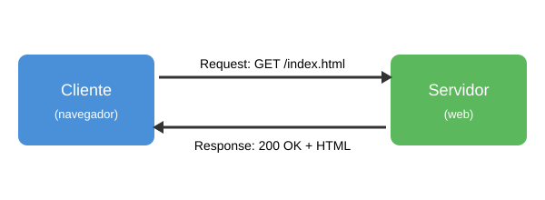

Protocolo HTTP
O que é
O HTTP (HyperText Transfer Protocol) é o protocolo usado na Web para a comunicação entre
o cliente (normalmente o navegador) e o servidor. Ele funciona na arquitetura
cliente-servidor: o cliente faz uma requisição (request) e o servidor devolve uma
resposta (response).
As mensagens vão pela porta 80 (HTTP) ou 443 (HTTPS, que é o HTTP com criptografia).
Na maioria das vezes a resposta tem um código HTML, que o navegador interpreta e mostra como página.

Como funciona quando abrimos um site
- Digitamos o endereço no navegador, por exemplo
https://www.ifsc.edu.br
- O navegador descobre o IP do servidor (DNS)
- O navegador manda uma requisição HTTP para o servidor
- O servidor processa e manda a resposta com o HTML
- O navegador lê o HTML e faz novas requisições para as imagens, CSS e JS da página
Métodos HTTP
| Método |
Para que serve |
| GET |
Buscar um recurso (página, imagem...) |
| POST |
Enviar dados para o servidor, como um formulário |
| PUT |
Atualizar um recurso |
| DELETE |
Apagar um recurso |
Requisição capturada
Capturei essa requisição no navegador apertando F12 e indo na aba Rede (Network):
GET / HTTP/1.1
Host: www.ifsc.edu.br
User-Agent: Mozilla/5.0 (Windows NT 10.0; Win64; x64) Chrome/128.0
Accept: text/html,application/xhtml+xml
Accept-Language: pt-BR,pt;q=0.9
Accept-Encoding: gzip, deflate, br
Connection: keep-alive
Campos do request
- GET / HTTP/1.1: linha inicial, tem o método (GET), o caminho do recurso (/) e a versão do protocolo
- Host: o domínio do servidor que estamos acessando
- User-Agent: informa qual navegador e sistema operacional fez o pedido
- Accept: os tipos de conteúdo que o navegador aceita receber
- Accept-Language: o idioma preferido
- Accept-Encoding: os tipos de compressão que o navegador entende
- Connection: keep-alive quer dizer para manter a conexão aberta para os próximos pedidos
Resposta capturada
HTTP/1.1 200 OK
Date: Wed, 12 Aug 2026 11:20:05 GMT
Server: Apache
Content-Type: text/html; charset=UTF-8
Content-Length: 48213
Cache-Control: no-cache
<!DOCTYPE html>
<html> ...
Campos do response
- HTTP/1.1 200 OK: linha de status, com a versão e o código de resposta
- Date: data e hora da resposta
- Server: o software do servidor
- Content-Type: o tipo do conteúdo que veio, aqui é HTML em UTF-8
- Content-Length: o tamanho do corpo da resposta em bytes
- Cache-Control: regras de cache para o navegador
- Depois de uma linha em branco vem o corpo, que é o HTML da página
Códigos de status
- 200 - OK, deu certo
- 301 - o recurso mudou de endereço
- 404 - não encontrado
- 500 - erro no servidor
Voltar